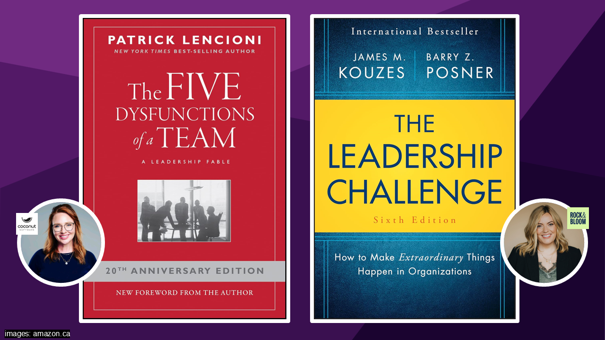
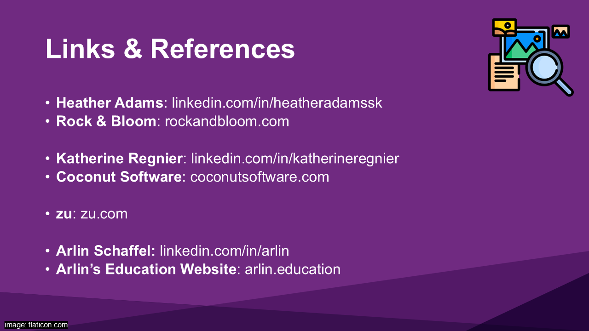

- not the starting slide - just use to KILL TIME during setup
- quick quip re: “omg only 5 minutes”
- Coconut - founded in 2007 - 120 people
- Rock & Bloom - founded in 2012 - 21 people
- WHY I CHOSE THEM
- worked with both early in my career
- had a LASTING IMPACT and have continued to succeed
- Katherine for her EMPATHY and STRATEGIC THINKING
- Heather for her AUTHORITY with clients (BEST PM EVER)
- DO NOT SPEND TIME ON THIS
- “how has your view on leadership CHANGED since you started your company”
- Katherine
- startup you are a DOER (quarterback)
- grow company and become COACH (need to HIRE doers)
- “it's hard because it's DIFFERENT”
- there is where CEOs get fired
- “it's ok to not be the quarterback”
- Heather
- SELF AWARENESS grown over time
- leadership style - small team doesn't work big team
- how do you build someone up?
- give employees SPACE to take risks and fail
- “How do you build trust and create psychological safety on your team”
- BOTH
- important to ALIGN our VALUES (which builds TRUST)
- ( NEXT SLIDE IS VALUES )
- 1 on 1s, daily standups BOTH remind about values
- Katherine
- can't have SAFETY without TRUST
- HEALTHY FRICTION is a good thing
- Heather
- CONNECTING as HUMANS not just on the WORK / TASK
- personally abides by “radical candor”
- it is not OBNOXIOUS AGGRESSION - (brutal honesty)
- it is not RUINOUS EMPATHY - (spare short-term feelings)
- it is not MANIPULATIVE INSEINCERITY - (insincere flattery)
- Katherine
- set clear expectations
- “I love you, but I need to see XYZ”
- Katherine
- “I didn't realize the importance or the alignment it would create in a company”
- big COST for not having aligned VALUES - people!
- Heather
- need to INTEGRATE values can't just be WORDS and FLUFF
- every day standup - 'has someone “rocked” our values?'

- BOTH
- framed leadership as shared, evolving, and human, not fixed or top-down
- Katherine
- “my go to [book], I make everybody read it”
- Heather
- “recommend all the time”
- leadership styles look different

- thank Diane, School, Faculty for the opportunity